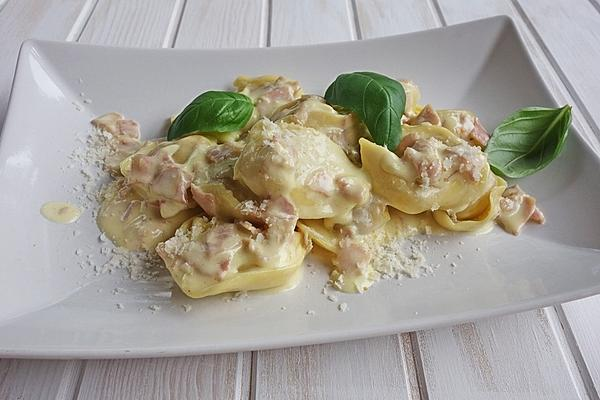

Tortellini

Description:
Schinken-Sahnesauce wie beim Italiener
Ingredients:
- 500g Tortellini, aus dem Frischeregal
- 200g Kochschinken, gewürfelt
- 1 EL Butter
- 600ml Sahne
- 2 Eigelb
- 4 EL Parmesan, frisch gerieben
- 1 TL Muskat
- 1 TL Salz
Steps:
- Die Tortellini nach Packungsanweisung kochen.
- Den gekochten Schinken in einer tiefen Pfanne in Butter kurz anbraten, dann 400 ml
von der Sahne hineingeben und auf kleiner Stufe köcheln lassen. Wenn die Tortellini
gar sind, in die Pfanne zur Schinkensahne geben und weiter köcheln lassen.
- In der Zwischenzeit in einer kleinen Schüssel das Eigelb mit Parmesan, Muskatnuss,
Salz und den restlichen 200 ml Sahne verrühren. Dies dann in die Pfanne zu den
Tortellini geben und so lange köcheln lassen, bis die Soße dickflüssig wird.
Sofort servieren.